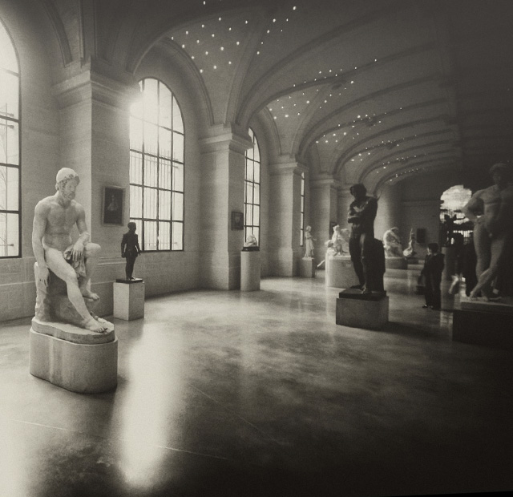
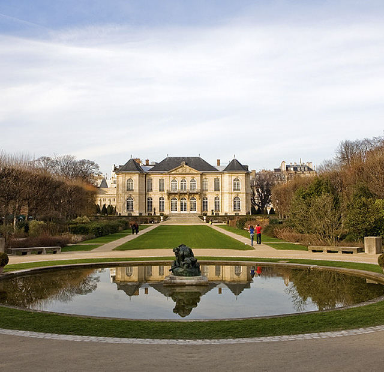

Musée Rodin is beslist het mooist gehuisvest van alle Parijse musea: in een schitterend 18de-eeuws herenhuis met royale tuin. Rodin huurde het van de staat in ruil voor het eigendom van zijn werk na zijn dood. Op het terrein staan bronzen versies van werken als De denker, De poort van de hel en De burgers van Calais. Aan de achterkant is een prettig buitencafé.
Binnen contrasteert de gepassioneerde intensiteit van de beelden met de elegante houten lambrisering en de kroonluchters. De vele doffe spiegels zijn de volmaakte achtergrond voor Rodins theorie over profielen, die inhoudt dat elk beeld wordt gevormd door het zicht vanuit verschillende standpunten. Er komen veel bezoekers in het museum voor De kus, het beeld dat Paolo en Francesca da Rimini uit De Goddelijke Komedie uitbeeldt net voor ze door Francesca’s echtgenoot worden ontdekt en vermoord. Rodins tijdgenoten waren geschokt door Francesca’s actieve rol. Nu zien kunstcritici dit als het laatste meesterwerk van figuratieve beeldhouwkunst voordat de kunstvorm opnieuw werd uitgevonden — vooral door Rodin zelf. De kus van Parijs is één van de slechts vier marmeren versies van dit werk. Heb je Paolo’s in extase gekromde tenen gezien?
Ook Rodins levendige, impressionistische werken van klei, kleine studies naar het leven, zijn de moeite waard om even bij stil te staan. De meeste werken hier zijn van klei of gips, want die worden beschouwd als Rodins beste prestaties. Nadat hij zijn leertijd doorlopen had, pakte hij nog maar zelden een beitel op. Het was in de 19de eeuw gebruikelijk om assistenten de stenen en bronzen versies te laten maken. Op de begane grond is ook een vertrek gewijd aan Camille Claudel, Rodins leerlinge, model en geliefde. Een van haar werken is L’Âge Mûr, dat symbool staat voor haar definitieve afwijzing door Rodin, en een buste van hem.


{kind=link}
{kind=link}